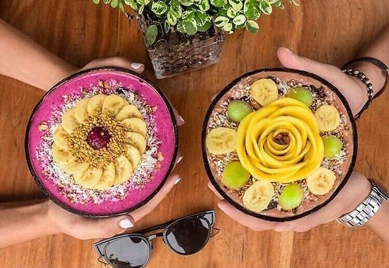
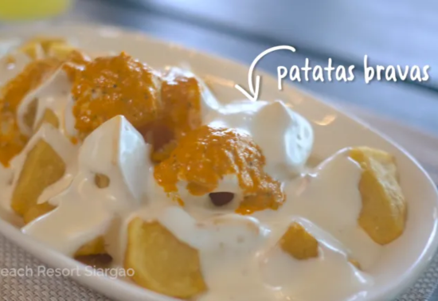
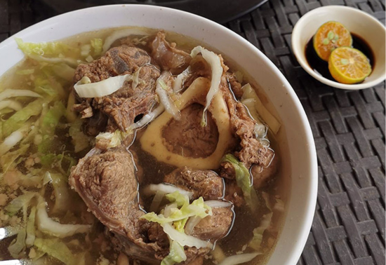

Siargao
An island in Surigao del Norte, famous for surfing and pristine beaches.
Siargao, an island in Surigao del Norte, is renowned for its world-class surfing spots,
pristine beaches, and vibrant marine life. Known as the "Surfing Capital of the Philippines,"
it attracts surfers from around the globe with its famous Cloud 9 wave. Beyond surfing,
Siargao offers stunning lagoons, lush mangrove forests, and idyllic islets, making it a
paradise for adventure seekers and nature lovers alike. The island's laid-back atmosphere
and friendly locals add to its charm, creating a perfect blend of excitement and relaxation.
Top 3 foods in Siargao that you must try!

Acai bowl at Shaka Siargao
typically consists of a thick, smoothie-like base made from frozen acai berries blended with
other fruits like bananas or berries. Topped with granola, fresh fruits such as mango or
pineapple, coconut flakes, and sometimes drizzled with honey or condensed milk, it's a
refreshing and nutritious treat perfect for the island's tropical climate and active lifestyle.

Patatas Bravas at Bravo Beach Resort
At Bravo Beach Resort in Siargao, their rendition of Patatas Bravas is a delightful dish that
combines crispy fried potatoes with a flavorful bravas sauce. The potatoes are expertly fried
to achieve a crispy exterior and fluffy interior, creating a satisfying texture contrast.
The bravas sauce, made with tomatoes, garlic, paprika, vinegar, and olive oil, adds a tangy
and slightly spicy kick that enhances the dish's overall appeal. It's a popular choice
among diners looking for a tasty and hearty appetizer or snack to enjoy while soaking in the
island atmosphere.

Bulalo at Bulaloan
In Siargao, specifically at a bulaloan (a restaurant specializing in bulalo), the bulalo dish
is a hearty Filipino soup renowned for its rich flavors and comforting qualities. Typically,
bulalo consists of tender beef shanks and marrow bones simmered for hours until the meat is fall-off-the-bone tender and the broth is infused with deep, savory flavors. The soup is often enhanced with vegetables such as corn on the cob, cabbage, and sometimes potatoes or plantains. It's served piping hot, garnished with green onions, and enjoyed with steamed rice on the side. Bulalo is beloved for its nourishing warmth and is a favorite choice among locals and visitors seeking a satisfying meal after a day of exploring the island.